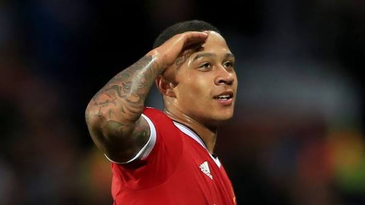
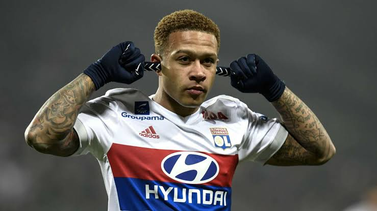
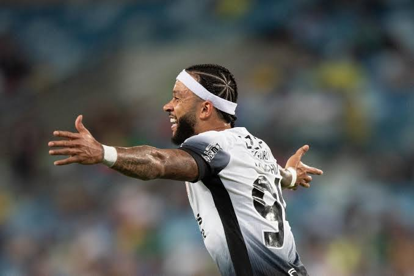
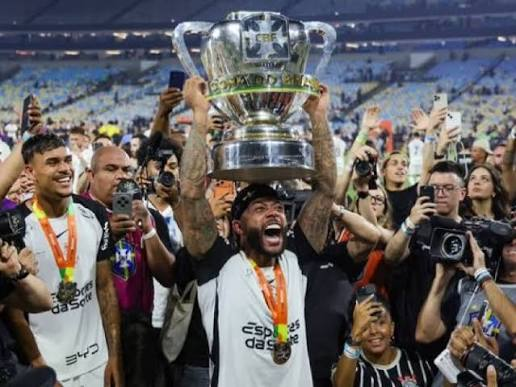
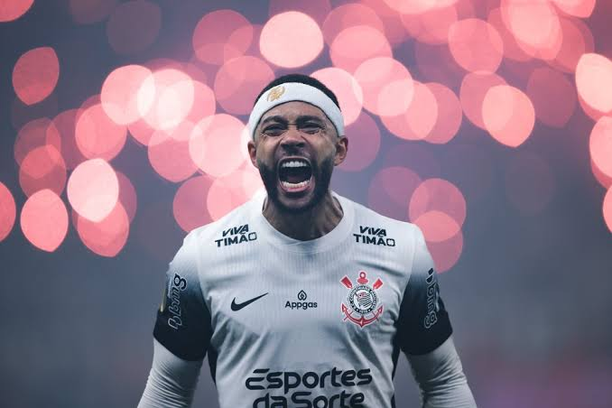

A História de Memphis Depay

Memphis Depay nasceu em 13 de fevereiro de 1994, em Moordrecht, nos Países Baixos. Sua infância foi marcada por dificuldades familiares e pela ausência de seu pai, que deixou a família quando Memphis ainda era muito jovem.
Crescer sem a presença do pai foi uma experiência difícil para Memphis e teve influência em sua personalidade. Desde cedo, encontrou no futebol uma maneira de expressar seus sentimentos e construir um caminho diferente para sua vida.
A realidade ao seu redor também era complicada. Memphis cresceu em um ambiente onde existiam dificuldades sociais e contato com problemas que poderiam levar muitos jovens para caminhos ruins. O futebol acabou sendo uma das principais ferramentas para que ele construísse seu próprio futuro.
Ainda criança, Memphis começou a se dedicar ao futebol e passou pelas categorias de base até chegar ao PSV Eindhoven. Seu talento rapidamente começou a chamar atenção e transformou aquele jovem em uma das grandes promessas do futebol neerlandês.
Do abandono ao sonho de ser jogador
A história de Memphis mostra como o futebol pode representar uma oportunidade de mudança. Mesmo enfrentando problemas familiares durante a infância, ele conseguiu transformar suas dificuldades em motivação para alcançar o futebol profissional.
- Nascimento: 13 de fevereiro de 1994
- Local: Moordrecht, Países Baixos
- Posição: Atacante
- Principal característica: habilidade, força e criatividade
Carreira Profissional

A carreira profissional de Memphis começou a ganhar destaque no PSV Eindhoven. O atacante rapidamente mostrou seu potencial e se tornou um dos principais jogadores da equipe. Na temporada 2014/15, foi um dos grandes destaques do campeonato neerlandês e ajudou o PSV a conquistar o título nacional.
Depois do sucesso no futebol dos Países Baixos, Memphis passou por grandes clubes da Europa. Cada experiência contribuiu para sua evolução como jogador e aumentou sua importância no futebol internacional.
PSV Eindhoven
Foi no PSV que Memphis apareceu para o futebol mundial. O jogador conquistou o Campeonato Holandês na temporada 2014/15 e terminou a competição como artilheiro, chamando a atenção de grandes clubes europeus.
Manchester United
Em 2015, Memphis foi contratado pelo Manchester United. A passagem pela Inglaterra foi marcada por desafios, pois o jogador encontrou dificuldades para apresentar todo o futebol que havia mostrado no PSV.
Apesar das dificuldades, a experiência em um dos maiores clubes do mundo fez parte de sua evolução profissional.
Lyon
Em 2017, Memphis chegou ao Olympique Lyonnais, na França. Foi no Lyon que ele reencontrou seu melhor futebol e passou a ser considerado um dos principais jogadores da equipe.
Memphis se tornou um dos grandes ídolos recentes do Lyon, destacando-se pelos gols, assistências, dribles e pela liderança dentro de campo.
Barcelona
Em 2021, Memphis chegou ao Barcelona. Vestir a camisa de um dos maiores clubes do mundo representou mais um momento importante em sua carreira.
No clube espanhol, teve a oportunidade de atuar ao lado de grandes jogadores e disputar competições de alto nível.
Atlético de Madrid
Memphis também defendeu o Atlético de Madrid. No futebol espanhol, continuou demonstrando sua capacidade ofensiva e ganhou experiência em mais um grande clube europeu.
Seleção dos Países Baixos
Pela seleção dos Países Baixos, Memphis se tornou um dos grandes nomes de sua geração.
Com seus gols, ele alcançou marcas históricas e se tornou o maior artilheiro da história da seleção neerlandesa, superando grandes nomes do futebol do país.
Memphis e o Corinthians

Em setembro de 2024, Memphis Depay chegou ao Corinthians em uma das contratações mais importantes do futebol brasileiro naquele ano. Depois de uma carreira construída em grandes clubes da Europa, o atacante escolheu o futebol brasileiro para viver um novo capítulo de sua trajetória.
Desde sua chegada ao Timão, Memphis rapidamente criou uma relação especial com a torcida. A Fiel passou a admirar não apenas o jogador dentro de campo, mas também sua personalidade, sua confiança e sua maneira de representar o clube.
Memphis e a Fiel
A relação entre Memphis e a torcida corintiana cresceu rapidamente. O atacante passou a demonstrar carinho pelo Corinthians e pela Fiel, criando uma identificação que ultrapassou o futebol.
Dentro de campo, Memphis também teve participação importante em conquistas do clube e em momentos decisivos.
Conquistas pelo Corinthians
- Campeonato Paulista de 2025
- Copa do Brasil de 2025
- Supercopa de 2026

A renovação e a continuidade da história
Depois de construir uma forte identificação com o clube e com a torcida, Memphis renovou seu contrato com o Corinthians em agosto de 2026. O novo vínculo mantém o atacante no Timão até 2028.
A renovação representa a continuidade de uma história que começou em 2024. Memphis, que já havia passado por grandes clubes da Europa e conquistado seu espaço na seleção dos Países Baixos, decidiu continuar sua trajetória vestindo a camisa do Corinthians.
Para a Fiel, a permanência do atacante significa continuar contando com um jogador de grande experiência internacional e que conseguiu criar uma relação especial com o clube.

De uma infância difícil ao futebol mundial. Dos grandes clubes da Europa ao Corinthians. A história de Memphis Depay continua.